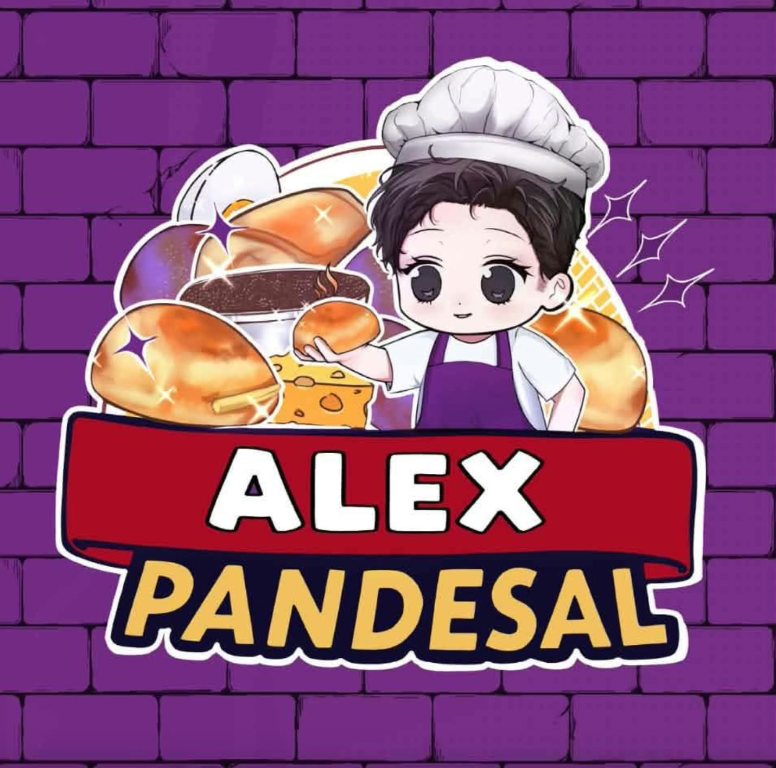
PROJECT / 01APPLICATION PROJECT
APMS
A student project exploring how an application can make a process more organized and easier to manage.
BSIT STUDENT · NORTHEASTERN COLLEGE
A curious student exploring how technology can solve everyday problems. I’m learning, building, and finding my way in the world of IT.
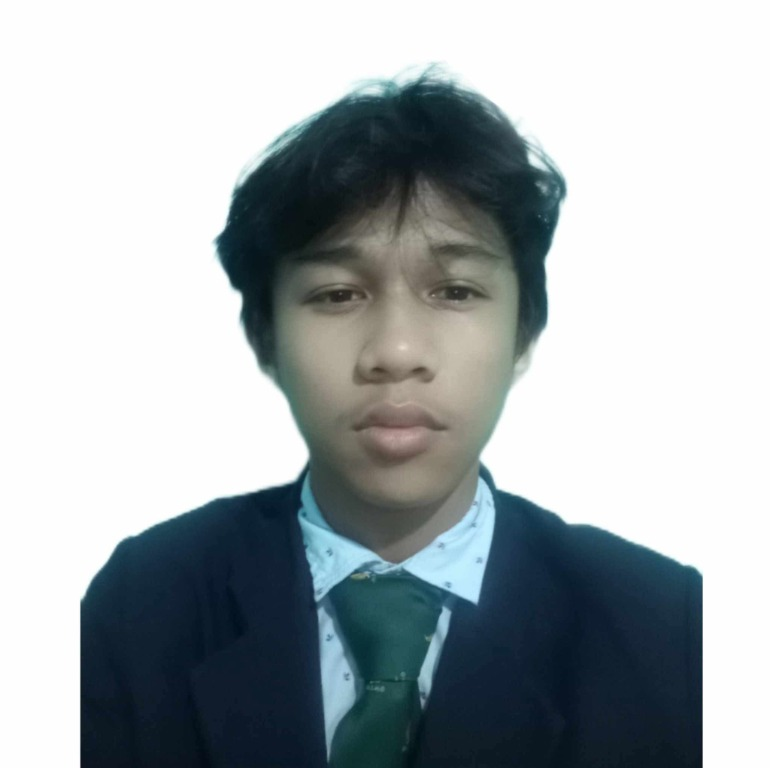
01 / A LITTLE ABOUT ME
THE PERSON BEHIND THE PROJECTSI’m Kenneth Gabriel C. Fiala, a Bachelor of Science in Information Technology student at Northeastern College. I enjoy discovering how digital tools work and turning ideas into practical projects.
I’m at the beginning of my IT journey, so every class, project, and seminar is a chance to learn something new. This portfolio brings together the work I’m creating and the topics I’m exploring.
See what I’m learning02 / SELECTED WORK
STUDENT PROJECTSA few projects and moments from my journey as a BSIT student.

PROJECT / 01APPLICATION PROJECT
A student project exploring how an application can make a process more organized and easier to manage.
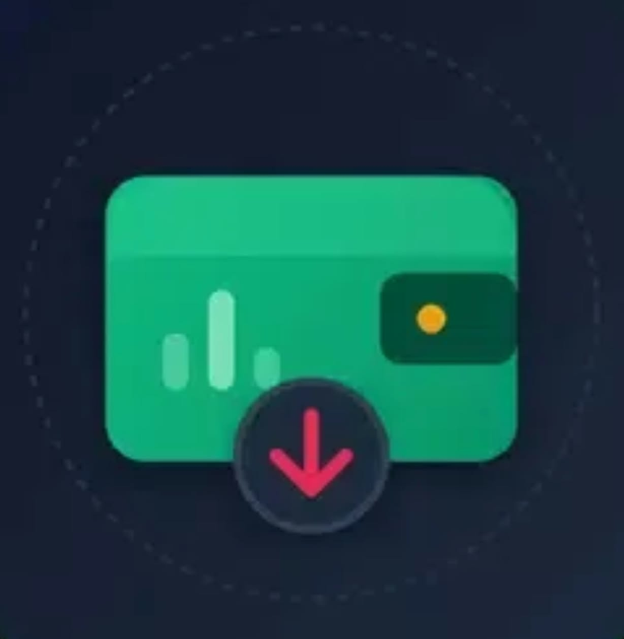
PROJECT / 02FINANCE · TRACKING
A simple concept for keeping expenses visible and making everyday spending easier to follow.
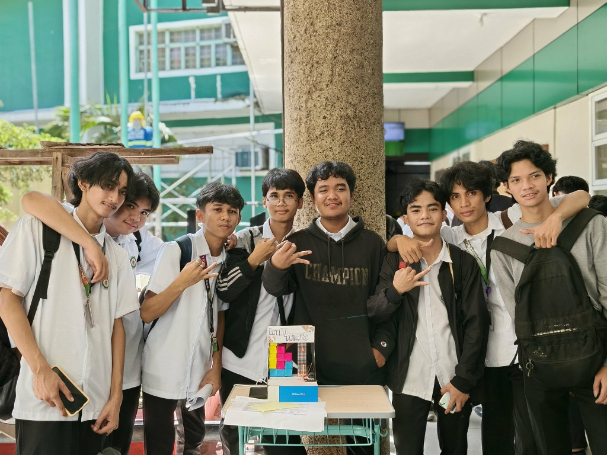
PROJECT / 03 BETTERCOLLABORATION · CLASS WORK
An interactive Tetris game powered by Arduino, combining creativity, programming, and teamwork to bring the classic block-stacking game to life.
03 / KEEPING CURIOUS
CERTIFICATES & LEARNINGEach certificate marks a new topic, skill, or perspective I’ve had the chance to explore.
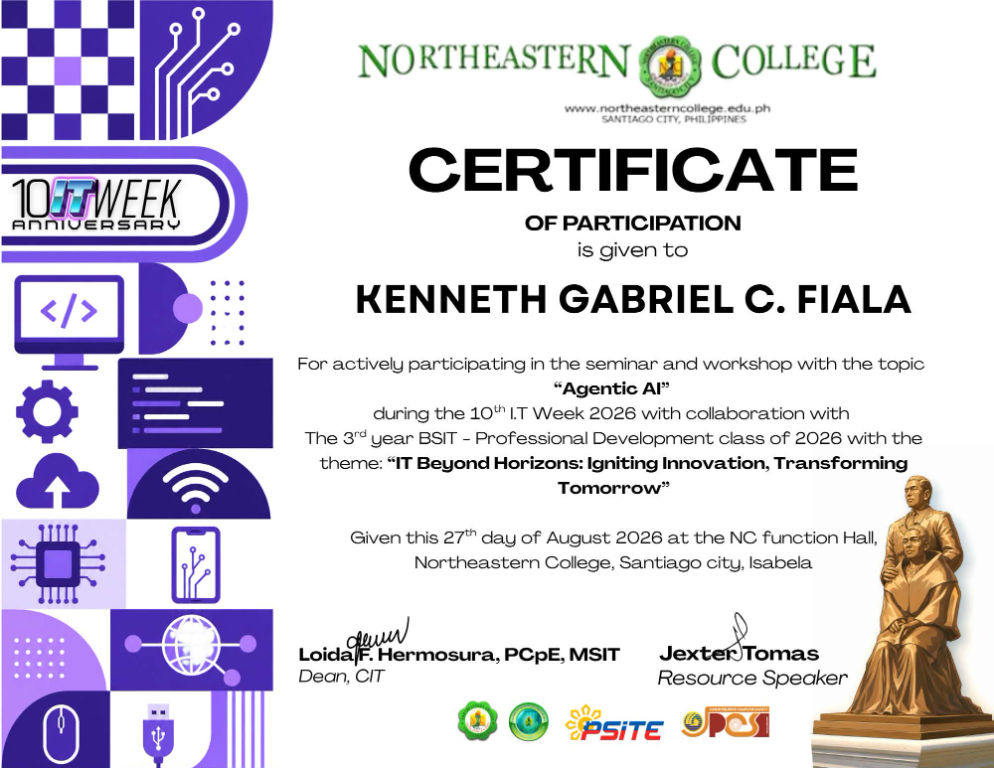
Agentic AI Video Editing Tips & Tricks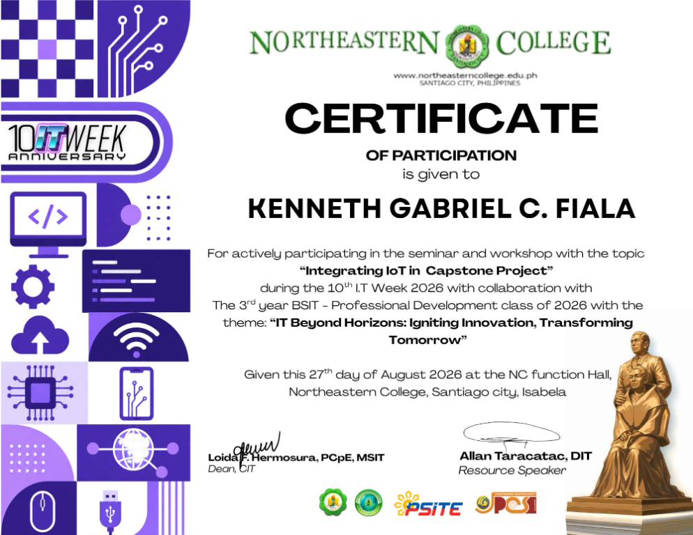
Integrating IoT in Capstone Project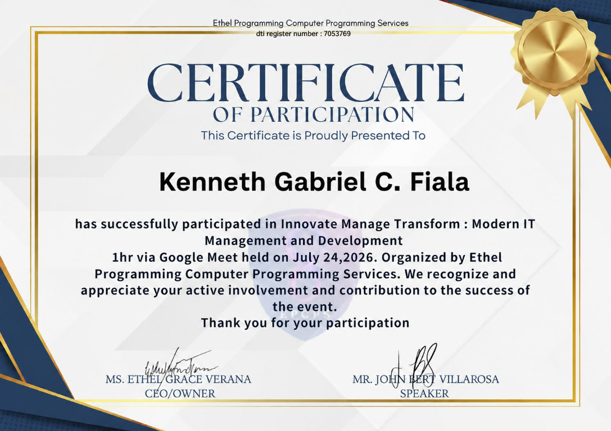
Modern IT Management & Development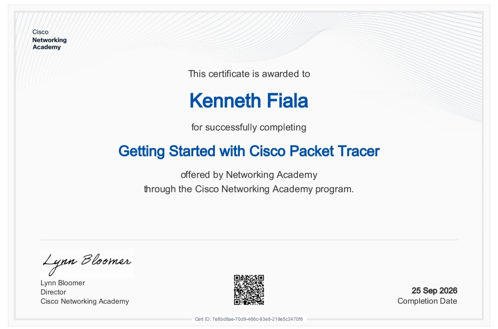
Getting Started with Cisco Packet Tracer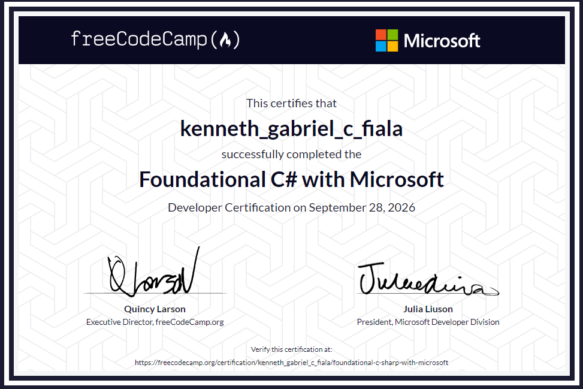
Foundational C# with Microsoft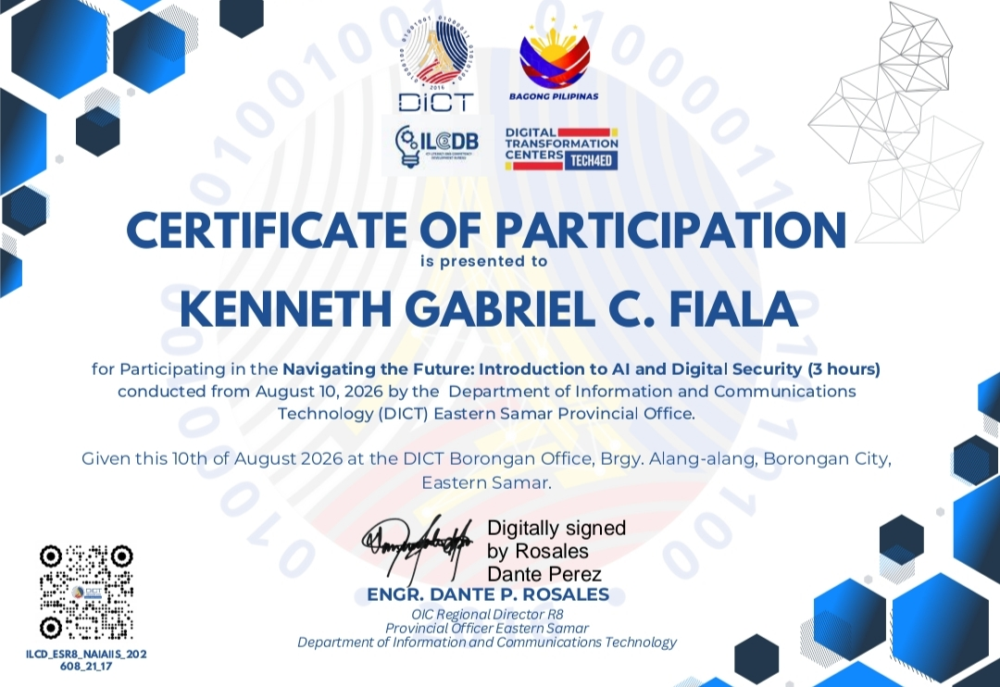
Introduction to AI & Digital Security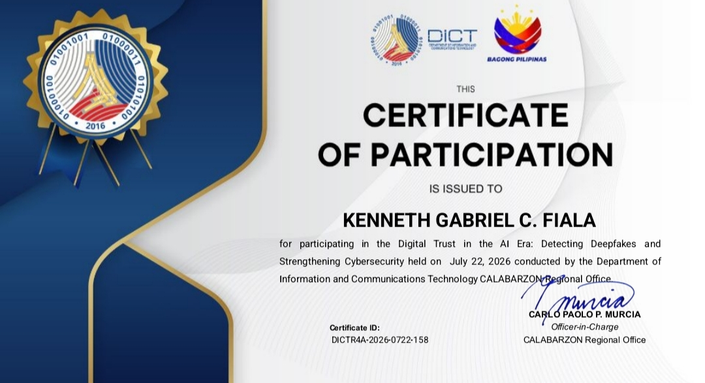
Digital Trust in the AI EraSELECT A CERTIFICATE TO VIEW IT FULL SIZE ↗
04 / THE JOURNEY SO FAR
ALWAYS A WORK IN PROGRESSI believe the best way to learn technology is to stay curious, try things, and keep showing up.
Studying Information Technology at Northeastern College and building a foundation in the field.
Exploring programming, applications, networking, AI, and digital security through projects and seminars.
Growing my skills one project, question, and new idea at a time.
05 / WHAT'S NEXT?
I’m always open to learning, collaborating, and meeting people who care about building useful things.
Back to the top KENNETH GABRIEL C. FIALA · BSIT STUDENT